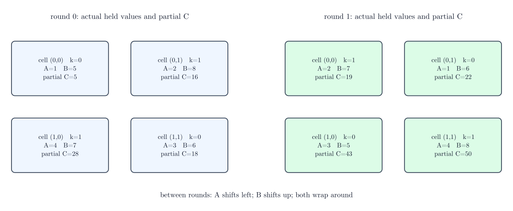
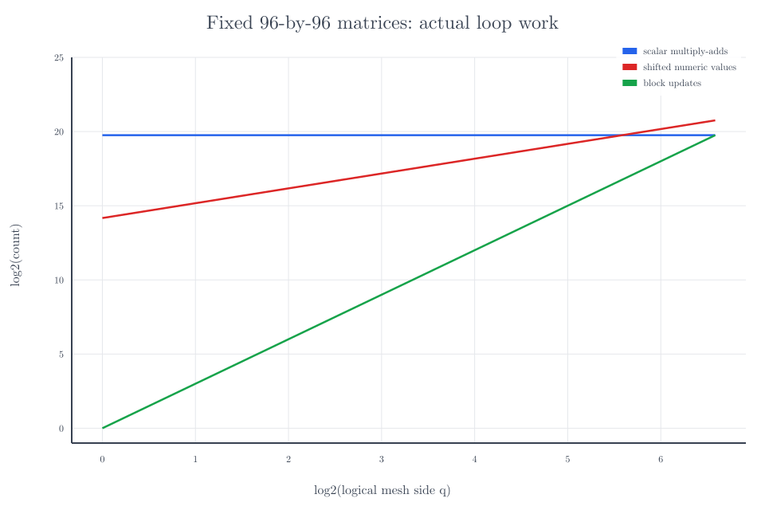
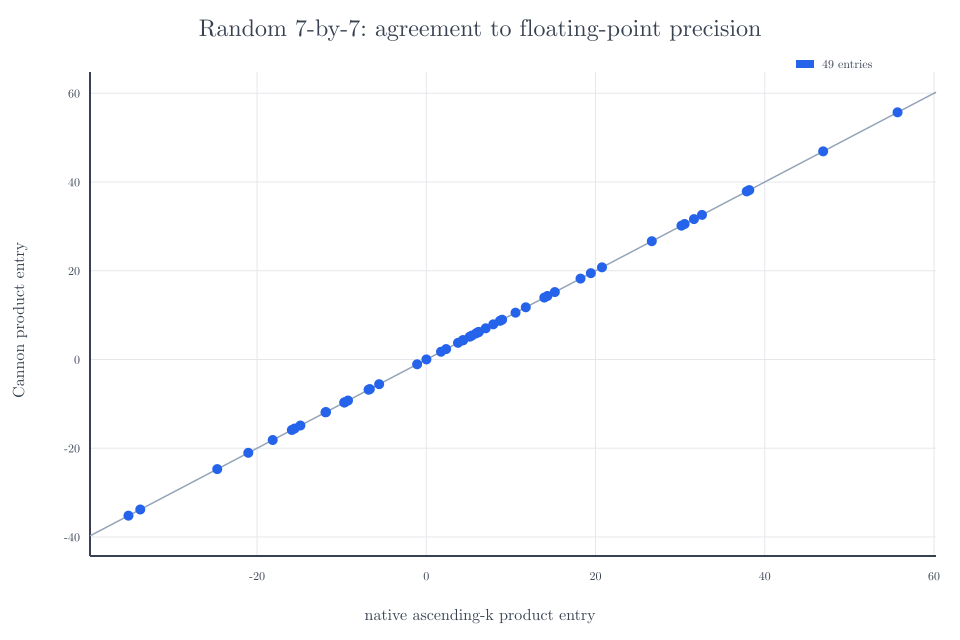

Cannon's Algorithm: Actual Skew, Block Ownership and Rounding
Abstract
Cannon's schedule makes matching matrix blocks meet by skewing rows and columns, then cyclically shifting them. We follow the actual native buffers through the original hand-checkable 2-by-2 product, generalize to square blocks on a smaller logical processor grid, and retain the original random 7-by-7 comparison plot. Datamunge now records transported source-block ids, per-round partial products and numeric-loop work. A cancellation example corrects the old report's claim of bit-for-bit equality: the schedule computes the matrix product in exact arithmetic, but reorders floating-point additions. All execution here is sequential; logical block shifts are not measurements of network traffic or parallel speedup.
The original 2-by-2 product: inspect both real rounds
Let A=[1,2;3,4] and B=[5,6;7,8]. A two-by-two logical grid initially assigns one scalar from each matrix to each cell. Skew A row i left by i and B column j up by j, with wrap-around. The first products are 1*5, 2*8, 4*7 and 3*6, giving partial C=[5,16;28,18]. The next shift moves A left and B up one cell. The second products complete C=[19,22;43,50]. Each table entry below uses a carried source id and an actual partial-output snapshot from the shared multiplication kernel.
#include <dm/dm.hpp>
int main() {
std::filesystem::create_directories("build");
const std::vector<double> A{1,2,3,4},B{5,6,7,8};
const auto trace=dm::algorithms::cannon_matmul_trace(A,B,2,2);
if(trace.output!=std::vector<double>{19,22,43,50}) return 1;
dm::graphics::Diagram diagram(65,1200);
dm::graphics::DiagramNodeStyle node;node.width=3.9;node.height=2.2;node.font_size=17;
std::print("| round | cell (i,j) | original A id | original B id | common k | A value | B value | partial C |\n"
"| ---: | :--- | ---: | ---: | ---: | ---: | ---: | ---: |\n");
for(const auto& round:trace.rounds) {
const double offset=static_cast<double>(round.step)*11;
diagram.text({offset+2.4,2.1},std::format("round {}: actual held values and partial C",round.step),20);
for(std::size_t i=0;i<2;++i) for(std::size_t j=0;j<2;++j) {
const auto cell=i*2+j,aid=round.a_sources[cell],bid=round.b_sources[cell];
if(aid%2!=bid/2) return 1;
std::print("| {} | ({},{}) | {} | {} | {} | {:.0f} | {:.0f} | {:.0f} |\n",round.step,i,j,aid,bid,aid%2,A[aid],B[bid],round.partial[cell]);
node.fill=round.step?dm::RGB{220,252,231}:dm::RGB{239,246,255};
diagram.node(std::format("cell_{}_{}",round.step,cell),{offset+static_cast<double>(j)*4.8,-static_cast<double>(i)*3.1},
std::format("cell ({},{}) k={}\nA={} B={}\npartial C={}",i,j,aid%2,A[aid],B[bid],round.partial[cell]),node);
}
}
diagram.text({7.9,-5.1},"between rounds: A shifts left; B shifts up; both wrap around",19)
.save_svg("build/cannon_rounds.svg");
std::print("\nProduct: {}. Actual scalar multiply-adds: {}; skew copies: {}; shift copies: {}.\n",
trace.output,trace.work.multiply_adds,trace.work.skew_copies,trace.work.shift_copies);
std::print("Final closing shift restores skewed source ids: A {}, B {}.\n",trace.final_a_sources,trace.final_b_sources);
}| round | cell (i,j) | original A id | original B id | common k | A value | B value | partial C |
|---|---|---|---|---|---|---|---|
| 0 | (0,0) | 0 | 0 | 0 | 1 | 5 | 5 |
| 0 | (0,1) | 1 | 3 | 1 | 2 | 8 | 16 |
| 0 | (1,0) | 3 | 2 | 1 | 4 | 7 | 28 |
| 0 | (1,1) | 2 | 1 | 0 | 3 | 6 | 18 |
| 1 | (0,0) | 1 | 2 | 1 | 2 | 7 | 19 |
| 1 | (0,1) | 0 | 1 | 0 | 1 | 6 | 22 |
| 1 | (1,0) | 2 | 0 | 0 | 3 | 5 | 43 |
| 1 | (1,1) | 3 | 3 | 1 | 4 | 8 | 50 |
Product: [19, 22, 43, 50]. Actual scalar multiply-adds: 8; skew copies: 8; shift copies: 16. Final closing shift restores skewed source ids: A [0, 1, 3, 2], B [0, 3, 2, 1].

For a q-by-q grid with b-by-b blocks, n=q*b and the exact-arithmetic block product is
Initial skew establishes k_0. One left/up shift increments both operands' block index together, preserving their match. Adding s modulo q visits every inner block exactly once, proving the schedule. Within a block, the local inner coordinate is visited in ascending order. Carried ids in the trace travel through the same source-cell selection as numeric buffers; they are not reconstructed from this proof formula after multiplication.
This follows the [blocked schedule in Demmel's notes](https://people.eecs.berkeley.edu/~demmel/cs267/lecture11/lecture11.html). Our kernel retains a closing shift after the final multiplication, as the old scalar implementation did. It restores the initial skewed ownership, but cannot change the already completed C. An implementation interested only in C could omit it. Initial skew here is a direct buffer copy, without simulation of its possible multi-hop routing on a physical network.
Matrix size is not processor-grid size
The legacy cannon_matmul(A,B,n) uses q=n, so every logical cell holds one scalar. The new cannon_block_matmul(A,B,n,q) also supports any positive q that divides n. A four-by-four matrix on a two-by-two mesh has four cells, each holding a two-by-two A, B and C block. A real distributed implementation therefore needs O(b*b)=O(n*n/(q*q)) scalar storage per cell for a constant number of blocks, rather than O(1) scalars for arbitrary matrix size. Here the entire simulation holds O(n*n) numeric buffers in one process.
At fixed n, scalar multiply-add count is q*q*q*b*b*b=n*n*n. There are q*q*q block updates. Initial skew writes 2*n*n numeric values; q post-round shifts write 2*q*n*n values, including the final closing shift. The next program checks these formulas against actual loop increments on 96-by-96 all-one inputs, rather than timing them. The all-one product also checks every output value against 96 at every mesh size. A smaller nonconstant blocked product is checked against the existing native DenseMatrix product.
#include <dm/dm.hpp>
int main() {
std::filesystem::create_directories("build");
const std::vector<double> A{1,2,3,4,5,6,7,8,9,10,11,12,13,14,15,16};
const std::vector<double> B{1,2,0,0,0,1,0,0,0,0,1,0,0,0,3,1};
const auto blocked=dm::algorithms::cannon_matmul_trace(A,B,4,2);
const dm::linalg::DenseMatrix<double> left(4,4,A),right(4,4,B);
const auto expected=left*right;
if(blocked.output!=expected.data() || blocked.block_dimension!=2) return 1;
std::print("Four-by-four product on a two-by-two mesh: {}; block side {}.\n\n",blocked.output,blocked.block_dimension);
constexpr int n=96;const std::vector<double> ones(n*n,1);
std::vector<double> mesh,arithmetic,copies,updates;
std::print("| mesh side q | block side b | actual block updates | actual scalar multiply-adds | actual skew copies | actual shift copies |\n"
"| ---: | ---: | ---: | ---: | ---: | ---: |\n");
for(int q:{1,2,3,4,6,8,12,16,24,32,48,96}) {
const auto trace=dm::algorithms::cannon_matmul_trace(ones,ones,n,q);
const auto expected_work=dm::algorithms::cannon_work(n,q);
const auto& w=trace.work;
if(w.block_updates!=expected_work.block_updates || w.multiply_adds!=expected_work.multiply_adds ||
w.skew_copies!=expected_work.skew_copies || w.shift_copies!=expected_work.shift_copies ||
!std::all_of(trace.output.begin(),trace.output.end(),[](double value){return value==96;})) return 1;
std::print("| {} | {} | {} | {} | {} | {} |\n",q,trace.block_dimension,w.block_updates,w.multiply_adds,w.skew_copies,w.shift_copies);
mesh.push_back(std::log2(q));arithmetic.push_back(std::log2(w.multiply_adds));
copies.push_back(std::log2(w.shift_copies));updates.push_back(std::log2(w.block_updates));
}
dm::graphics::RPlot::create().line(mesh,arithmetic,"scalar multiply-adds",{37,99,235},2.5)
.line(mesh,copies,"shifted numeric values",{220,38,38},2.5)
.line(mesh,updates,"block updates",{22,163,74},2.5)
.title("Fixed 96-by-96 matrices: actual loop work")
.x_label("log2(logical mesh side q)").y_label("log2(count)").y_limits(-1,25)
.save_svg("build/cannon_work.svg");
}Four-by-four product on a two-by-two mesh: [1, 4, 15, 4, 5, 16, 31, 8, 9, 28, 47, 12, 13, 40, 63, 16]; block side 2.
| mesh side q | block side b | actual block updates | actual scalar multiply-adds | actual skew copies | actual shift copies |
|---|---|---|---|---|---|
| 1 | 96 | 1 | 884736 | 18432 | 18432 |
| 2 | 48 | 8 | 884736 | 18432 | 36864 |
| 3 | 32 | 27 | 884736 | 18432 | 55296 |
| 4 | 24 | 64 | 884736 | 18432 | 73728 |
| 6 | 16 | 216 | 884736 | 18432 | 110592 |
| 8 | 12 | 512 | 884736 | 18432 | 147456 |
| 12 | 8 | 1728 | 884736 | 18432 | 221184 |
| 16 | 6 | 4096 | 884736 | 18432 | 294912 |
| 24 | 4 | 13824 | 884736 | 18432 | 442368 |
| 32 | 3 | 32768 | 884736 | 18432 | 589824 |
| 48 | 2 | 110592 | 884736 | 18432 | 884736 |
| 96 | 1 | 884736 | 884736 | 18432 | 1769472 |

These copies include self-copies at q=1, where no off-cell communication would be necessary. Counting assigned values is not the same as counting messages, network hops or communication rounds. Nor does a sequential count establish parallel speedup. The conceptual distributed benefit is that each multiplication round needs only cyclic neighbour exchanges once data is aligned; toroidal wrap-around is part of that logical topology. Actual performance also depends on placement, routing, synchronization, message startup and local matrix kernels.
Retain the original random 7-by-7 comparison, without claiming exact equality
The experiment still uses seven-by-seven matrices with entries in [-5,5) and seed eleven. It now calls native runif(), whose SplitMix64 stream differs from the old report's std::mt19937 draws, so old saved numbers are not reused. The reference is the library's DenseMatrix product, an ascending-inner-index loop; the report does not implement another multiplication algorithm locally. The plot compares all 49 entries. Small absolute discrepancies are expected when the cyclic order differs, even if the points visually lie on the identity line.
#include <dm/dm.hpp>
int main() {
std::filesystem::create_directories("build");
dm::set_seed(11);constexpr int n=7;
const auto A=dm::runif(-5,5,n*n).values(),B=dm::runif(-5,5,n*n).values();
const dm::linalg::DenseMatrix<double> left(n,n,A),right(n,n,B);
const auto standard=left*right;
const auto cannon=dm::algorithms::cannon_matmul(A,B,n);
double maximum=0;std::size_t unequal=0;
for(std::size_t e=0;e<cannon.size();++e) {
maximum=std::max(maximum,std::abs(cannon[e]-standard.data()[e]));
unequal+=cannon[e]!=standard.data()[e];
}
if(maximum>1e-10 || cannon.size()!=49) return 1;
std::print("Random 7-by-7: {} entries; unequal floating-point values: {}; maximum absolute difference: {:.17g}.\n",
cannon.size(),unequal,maximum);
dm::graphics::RPlot::create().points(standard.data(),cannon,"49 entries",{37,99,235},5)
.abline(0,1,{148,163,184},1.5).title("Random 7-by-7: agreement to floating-point precision")
.x_label("native ascending-k product entry").y_label("Cannon product entry")
.save_svg("build/cannon.svg");
}Random 7-by-7: 49 entries; unequal floating-point values: 26; maximum absolute difference: 1.4210854715202004e-14.

Exact-arithmetic equivalence is not a bitwise floating-point identity. At a specific output entry take the terms 1016, -1016 and 1. Ascending order first cancels the large pair, then adds one. The cyclic order -1016, 1, 1016 loses the unit before the large values cancel. The following native one-cell and three-by-three-cell runs realize these two orders.
Cancellation, budgets and checked dimensions
#include <dm/dm.hpp>
int main() {
const std::vector<double> A{1e16,-1e16,1,0,0,0,0,0,0},B{0,1,0,0,1,0,0,1,0};
const auto ascending=dm::algorithms::cannon_block_matmul(A,B,3,1);
const auto cyclic=dm::algorithms::cannon_matmul_trace(A,B,3,3);
if(ascending[1]!=1 || cyclic.output[1]!=0) return 1;
std::print("Cancellation at C(0,1): one-cell ascending-k = {}; scalar-cell cyclic = {}.\n",ascending[1],cyclic.output[1]);
std::print("Actual inner-index order:");
for(const auto& round:cyclic.rounds) std::print(" {}",round.a_sources[1]%3);
std::print(".\n");
bool budget=false;try {(void)dm::algorithms::cannon_matmul_trace({1,2,3,4},{5,6,7,8},2,2,7);}
catch(const std::length_error&) {budget=true;}
const auto exact=dm::algorithms::cannon_matmul_trace({1,2,3,4},{5,6,7,8},2,2,8);
bool shape=false;try {(void)dm::algorithms::cannon_matmul({1},{1},2);}
catch(const std::invalid_argument&) {shape=true;}
bool divisor=false;try {(void)dm::algorithms::cannon_work(4,3);}
catch(const std::invalid_argument&) {divisor=true;}
bool overflow=false;try {(void)dm::algorithms::cannon_work(std::numeric_limits<int>::max(),1);}
catch(const std::length_error&) {overflow=true;}
if(!budget || !shape || !divisor || !overflow || !dm::algorithms::cannon_matmul({}, {},0).empty()) return 1;
std::print("One-short block-update budget rejected: {}; exact budget performed {} updates.\n",budget,exact.work.block_updates);
std::print("Bad input length rejected: {}; nondividing mesh rejected: {}; count overflow rejected before allocation: {}.\n",shape,divisor,overflow);
}Cancellation at C(0,1): one-cell ascending-k = 1; scalar-cell cyclic = 0. Actual inner-index order: 1 2 0. One-short block-update budget rejected: true; exact budget performed 8 updates. Bad input length rejected: true; nondividing mesh rejected: true; count overflow rejected before allocation: true.
The empty product has n=q=0 and empty inputs. Otherwise dimensions are nonnegative, q is a positive divisor of n, and each input has exactly n*n values. Shape and loop-count products use checked size_t arithmetic. Budgets bound q*q*q block updates and are checked before buffer allocation; no partial result is returned. The original API keeps its signature and scalar schedule. Input vectors are never changed and may alias. Ordinary double arithmetic propagates NaN, infinity and numeric overflow; there is no finite-input or numerical-stability guarantee hidden in dimension validation.
Ordinary simulation uses O(n*n) temporary numeric storage and O(n*n*n+q*n*n) sequential work. The trace additionally owns q partial matrices and q pairs of q*q source-id arrays, using O(q*(n*n+q*q)) storage. This is a teaching/debugging trace, so large runs should normally use the untraced API. No real dataset is needed to demonstrate this algebraic schedule; integer, random bounded and adversarial cancellation matrices expose its relevant behavior.
Native tests independently form integer products, derive source-id permutations from the schedule invariant, and reconstruct every recorded partial from original blocks. They cover 6,561 exhaustive signed 2-by-2 pairs at both mesh sizes, 1,000 larger blocked cases, identity/zero/aliased inputs, budgets, exact copy counts, ownership, malformed shapes and overflow. Random floating products are also compared against long-double dot products with a magnitude-scaled rounding allowance, alongside the original sparse-linear-algebra regression tests.
References
- L. E. Cannon (1969). [A cellular computer to implement the Kalman filter algorithm](https://scholarworks.montana.edu/server/api/core/bitstreams/643669d9-055d-4345-a467-41ad612599c8/content). PhD thesis, Montana State University. Original cellular-computer work.
- J. Demmel. [CS267: Cannon's algorithm on a 2D mesh](https://people.eecs.berkeley.edu/~demmel/cs267/lecture11/lecture11.html). Block partitioning, initial alignment and cyclic multiplication schedule.